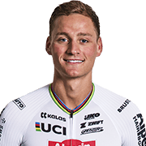

Mathieu Van der Poel
|  |
Nombre: |
Mathieu Van der Poel |
Fecha de Nacimiento: |
19 Enero 1995 |
| Edad: |
28 años |
Lugar de Nacimiento: |
Kapellen, Bélgica |
| Residencia: |
s-Gravenwezel, Bélgica |
Nacionalidad: |
Bélgica |
| Peso: |
75 kg |
Altura: |
1,84 m |
| Equipo: |
Alpecin - Deceuninck |
Categoría: |
Masculina |
| UCI World Ranking: |
Victorias: |
| 6 posición |
221 victorias |
| Año |
Equipo |
| 2019 |
Corendon - Circus |
| 2020 |
Alpecin - Fenix |
| 2021 |
Alpecin - Fenix |
| 2022 |
Alpecin - Fenix |
| 2023 |
Alpecin - Fenix |
| 2024 |
Alpecin - Deceuninck |
Clasificación año 2023-2024:
| Años |
Ranking |
Categoría |
Clase |
Posición |
| 2023-2024 |
UCI World Cup |
Elite |
CDM |
9 |
| 2023-2024 |
Superprestige |
Elite |
SP |
22 |
| 2023-2024 |
X20 Badkamers Trofee |
Elite |
X20 |
2 |